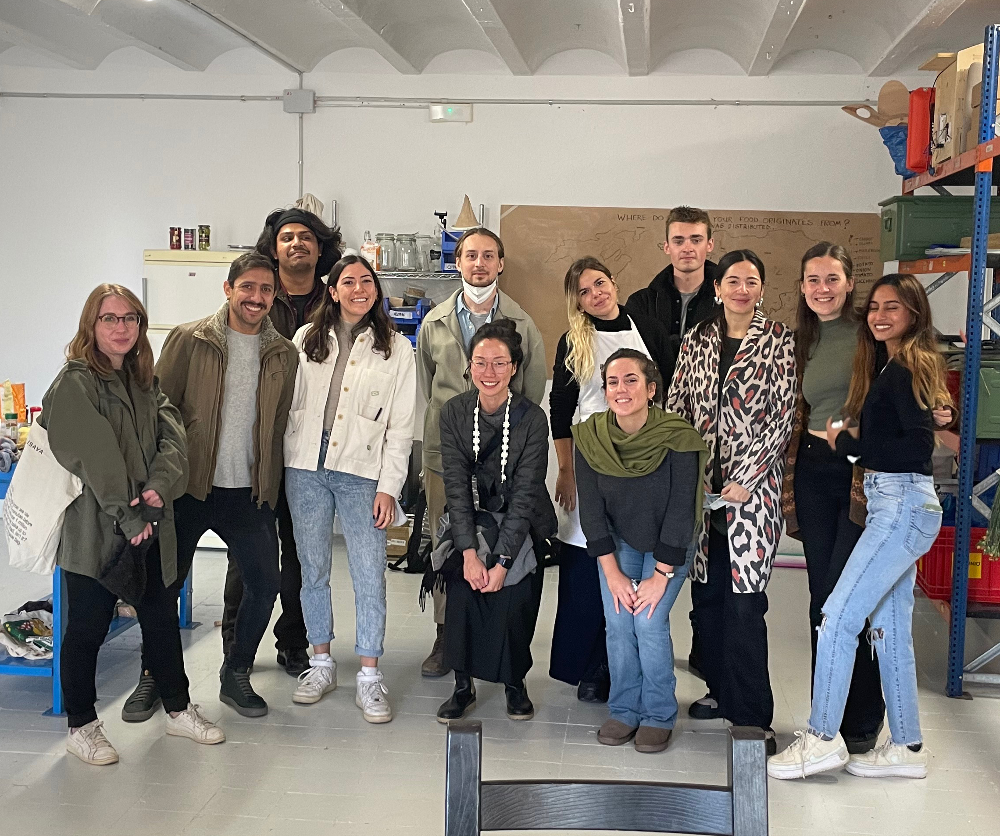
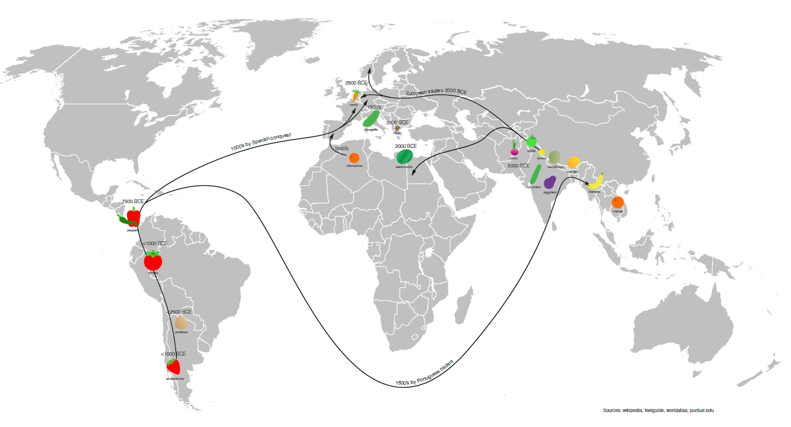
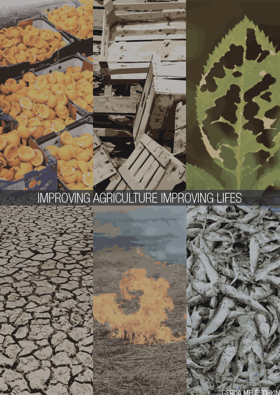

term 1
design dialoges

design intervention
Together with my classmates: Paula B, Paula, Vikrant und Ruben, we held a workshop on the 6th december called "Conversaciones Marduras". We decided to focuse on the huge amount of food waste we get in our food system. We want to adress to the people and raise awarness with cooking and other activities with food waste. Everything to educate people and show options to use it, like showing people what to do with the rest of cooking waste. First we checked where we can get food. It was not easy because many supermarkets have already companies who get the food trash, which is good! In the end we found one where we got different fruits and vegetables. The most amount were tomatoes and apples. Then we decide what we want to do the intervention, which we could do at the MDEF alumni’s studio in hospital. We thought about following activities: conversations and thoughts about ingredients: everyone, coming up with recipes: everyone, cooking: Vikrant and Paula, seed origin on the world map: Ruben, peeling veggies or fruit for artwork: Gerda, recording/taking pics: Pau und Gerda, natural dying: Pau, showing and producing organic fertilizer: Gerda, explaining how to make a compost: Gerda. Then we organised the tables: where are we going to do which workshop, invite different kind of people who are related to food and others, who are not part of the MDEF group. And we designed a recipe book with recipes from food waste, like carrot greens pesto, knodel out of hard bread, radish leaf soup, apple peel chips, papaya seeds as pepper and beetroot leaf salat.
The workshops bring interesting results. Everybody seemed interested and wanted to try all different kind of workshop activities. They didn’t knew the possibilities to use food waste for the fertilizer which we showed: organic fertilizer: banana peels in water for 24 hours and then use the water without the peels and mix it with water and add it to your plants, coffee grounds just let them dry for a few days or dry them in the oven and mix them with the soil and the small parts of the egg shells you can put over your soil. Also for them it was nice to see how the compost layers are combined: wet paper, leaves, soil, earthworms and foodwaste (can not be cooked or oranges/lemons). The origin map activity showed us how uneducated people are also like us about food origins. Now we can buy at each time all different kind of fruits and vegetables and in every country, which was not and should be not normal. The supply-chains are long and not sustainable. Growing food in all seasons is not easy and you need many pesticides and artificial sun. The result of the origins of the food is this: Peppers: Region of Panama, Tomato: Region of Brasil, Potatoes: Region of Argentina, Strawberries: Region of Argentina, Cambodsha: orange, Bananas: Myanmar, Eggplant: India, Cucumber: India, Onions: Afghanistan, Apple: Region north Pakistan, Lemon: Region Tibet, Cantaloupe: Region Tibet, Mango: Region Brahmaputra, Watermelon: Libya, Clementine: Algeria, Carrot: Belgium, Courgette: Italy, Olives: Greece.
What are you taking out of this intervention? This intervention really showed us and the people more possibilities to take advantage with all the food and reduce food waste, to have in the end less waste. n this design intervention my role was to bring hopefully new ideas to the people, what to do with food waste what is not food. Show them there are more options to use it for good impacts, you reuse the waste and help for example your plants to be even more healthy and grow faster then before. I would love to focus more on food and agriculture waste. In total, about 13 tonnes of food waste are produced in Germany in a year. And depending on the country even more or less. And still there is hunger all over the world, by the end of 2020, up to 811 million people would be suffering from chronic hunger. This does not make sense. I would love to go more deep into this topic. Also in the agriculture is a big amount of waste which the farmer burn, because of not knowing how to use everything. In the next steps I would like to go deeper in the topic, how is It possible to change the supply chain, so the food is better distributed and less wasted. Also to think about what else you could do with food scraps, if you haven´t plants for example.
We made a survey in the end to ask the people what they learned/ where interessed the most and so on. What interested you about the workshop? To get to know more about how to treat well our environment using the products we have within reach, Creative ways to reuse wasted food, Experimenting with very simple ingredients to create a whole meal, Have new ideas for new veggie food, the opportunity to cook and be creative for a good purpose. After this workshop, what would you do differently in your daily life? Specially how to give a second chance to the food that looks not useful anymore, but it isn't, Find ways to reuse my personal food scraps for soil fertilizer or mini-compost. Circularity in my own home., Refrain from buying daily and trying to make the most of what we have. Also buying locally, Take advantage with all the food and reduce food waste, I would go out of my comfort zone to cook something unexpected from ingredients I would normally consider almost "bad". Is there something you would like to explore deeper from what we saw on the workshop? It was really interesting to know about the country origin of some fruit and vegetable, and it would be awsome to know about the the import of the products to the differents countries from a historical point of view, I’d like to learn more about where our produce originated from and how it migrated and settled in to different cultures. As this was the part of the workshop I had NO idea about., Apart from food, what else can be made from waste food, More receipts with leftover, composting.
exhibition
text
Check our Website:Design Intervention